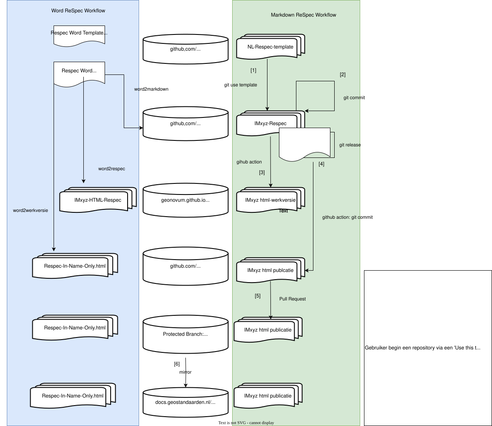
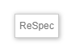
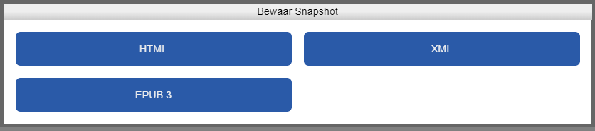
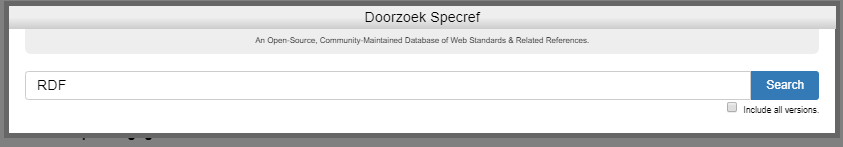
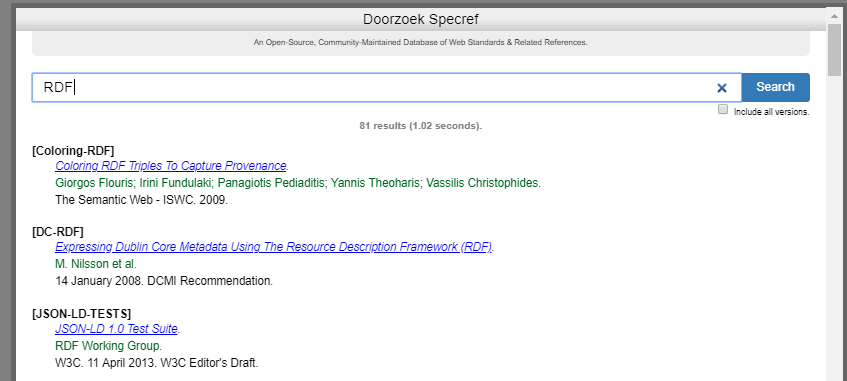

ReSpec
We maken standaarden met ReSpec. ReSpec gebruikt input bestanden om HTML te genereren. Deze inputbestanden (de content) wordt gemaakt in Markdown. Deze Markdown bestanden kunnen worden aangemaakt met text editor. GitHub wordt gebruikt als de 'repository' waarin alle bestanden die bij een standaard horen, beheerd worden.
ReSpec is een tool van W3C voor het schrijven van specifications. ReSpec zorgt voor een uniforme styling in het document, onderhoudt referenties en verwijzingen naar andere documentatie, verzorgt de inhoudsopgave, zorgt voor links naar vorige en meest recente versies, en heeft een integratie met Github issues.
Geonovum gebruikt een fork van ReSpec die door Logius beheerd wordt. Dit document bevat een globale instructie over hoe snel aan de start te gaan. Meer documentatie is op andere plaatsen te vinden:
- Er is een gedetailleerde gebruikershandleiding beschikbaar.
- Er is ook een ontwikkelaarshandleiding te vinden.
- De Geonovum wiki over ReSpec is een fork van de w3c ReSpec met aanpassingen voor Geonovum. Deze is achterhaald omdat we nu van de Logius Respec gebruik maken. (TODO aanpassen)
Workflows voor het maken van een ReSpec document
Het volgende diagram beschrijft verschillende workflows voor het maken van een ReSpec publicatie. Er zijn twee hoofdroutes:
- ReSpec via Word. (Blauwe kolom)
- ReSpec via Markdown. (Groene kolom)

ReSpec via Markdown
ReSpec documenten worden beheerd in een GitHub repository.
- Gebruik de Geonovum ReSpec template als startpunt en druk op 'Use this template'.
- Vervang alle voorkomens van 'TODO' met inhoud.
Regel: Een github repository mag maar één ReSpec document bevatten.
Regel: Nieuwe ReSpec documenten in Markdown volgen de Geonovum ReSpec template
De URL van een publicatie op docs.geonovum.nl
ReSpec documenten worden gepubliceerd op docs.geostandaarden.nl. Iedere gepubliceerde versie van een document heeft een eigen URL. Voor de laatst gepubliceerde versie is een aparte URL.
De URL van iedere publicatie wordt als volgt bepaald:
https://docs.geostandaarden.nl/[pubdomain]/[specStatus]-[spectype]-[shortName]-[publishDate]/De laatst gepubliceerde versie is OOK te vinden op:
https://docs.geostandaarden.nl/[pubdomain]/[shortName]/De namen van de variabelen staan verderop uitgelegd.
De bestanden van een ReSpec repository
Het bestand 'index.html'
Het bestand index.html zorgt ervoor dat het ReSpec document automatisch wordt geladen in de browser. Bij het laden wordt ook automatisch de geonovum-ReSpec-code geladen en uitgevoerd. Deze code zorgt ervoor dat het document zijn standaard layout krijgt.
Het bestand 'index.html' heeft een vaste indeling.
In de HTML-header wordt de js-ReSpec bibliotheek geladen. Het enige dat in de header mag worden aangepast is de title (tussen \<title> en \</title>.
In de HTML-Body geldt vrijheid in gebondenheid De <div> en/of <section>
regels mogen worden gekopieerd en toegevoegd. Wel belangrijk om de structuur
over te nemen, dus als volgt:
<div id='H00' data-format='Markdown' data-include="ToCoVo.md"></div>
<section id='H01' data-format='Markdown' data-include="H1-Inleiding.md"\>\<h2\>Inleiding\</h2\>\</section\>Een <div> is een sectie plus bijbehorend document, dat niet in de
inhoudsopgave terechtkomt. Deze gebruik je bijvoorbeeld voor een Toelichting,
een Colofon of een Voorwoord.
Een <section> komt wél in de inhoudsopgave terecht. Deze heeft daarom behalve
de data-include van het document, ook (verplicht!) een <h2> tag. De tekst
tussen <h2> en </h2> komt in de inhoudsopgave te staan.
Het bestand 'config.js'
In config.js wordt een stuurvariabele voor ReSpec gevuld. De waarden in deze variabele worden door ReSpec gebruikt om de layout te bepalen, en bevatten een aantal document-eigenschappen.
SpecStatus
De SpecStatus in de configuratie geeft de keuze uit 4 waarden, deze waarden zijn vastgesteld, en mogen niet zomaar uitgebreid of aangepast worden. Elke status hoort bij een formele fase van een ReSpec document. Zie ook de Geonovum ReSpec wiki.
- wv, Werkversie: Dit is de versie van het document waaraan wordt gewerkt. Deze versie is continu 'under-construction'.
- cv, Consultatieversie: Dit is een 'snapshot' van de versie die 'in consultatie' wordt gezet. Aan deze versie wordt niks meer gedaan totdat de consultatie is afgelopen. Daarna worden alle op en aanmerkingen uit de consultatieronde verwerkt.
- vv, Vaststellingsversie: Dit is een 'snapshot' van de versie na het verwerken van de op en aanmerkingen uit de consultatieronde is ontstaan. Deze versie wordt aangeboden aan de programma-raad van Geonovum, om te worden 'vastgesteld'.
- def, Definitieve versie: Dit is de definitieve versie van het document, zoals vastgesteld door de programma-raad. Van deze versie wordt opnieuw een 'snapshot' gemaakt in ReSpec. Het resultaat van die snapshot wordt op http://docs.geonovum.nl neergezet.
- ld, Levend document: Geschikt voor handreikingen en dergelijke die regelmatig gewijzigd worden en waarvoor niet een consultatie- en goedkeuringsproces gevolgd hoeft te worden
- basis, document zonder officiële status.
SpecType
Het SpecType in de configuratie is een vaste lijst met waarden, deze waarden zijn vastgesteld, en mogen niet zonder overleg met de Technische ReSpec beheerders uitgebreid of aangepast worden.
-
NO Norm: Een norm is bij een officieel standaardisatie instituut ondergebracht en bevat bindende afspraken. Naast het gebruik van normen is NEN 3610 de enige norm waar Geonovum een inhoudelijke verantwoordelijkheid heeft. Het formele beheer en beslissingen worden genomen in de NEN normcommissie 351 240 waar Geonovum de voorzitter van is.
-
ST Standaard: Een document met (bindende) afspraken.
-
IM Informatiemodel: Een standaard waarbij door de term informatiemodel te hanteren wordt aangegeven dat het een abstractie (het model) vormt van de werkelijkheid zoals beschreven binnen een bepaalde sector/domein. Informatiemodellen zijn een semantische invulling van normen voor sectoren zoals ruimtelijke ordening, kabels en leidingen, water, etc..
-
PR Praktijkrichtlijn: Praktijkrichtlijnen zijn producten die informatie geven, vaak met een technisch karakter, die nodig is voor het toepassen van standaarden. Een praktijkrichtlijn hoort altijd bij een standaard/norm.
-
HR Handreiking: Op zichzelf staande documentatie dat als doel heeft een hulpmiddel te zijn, niet verplichtend maar ondersteunend.
-
WA Werkafspraak: Legt uit hoe wetgeving moet worden toegepast bij onduidelijkheden, discrepanties of fouten in de standaarden.
-
BD Beheerdocumentatie: Documentatie met betrekking tot het beheerproces van de standaard. Deze documentatie betreft niet een standaard of onderdeel daarvan, zoals een handreiking of werkafspraak.
-
AL Algemeen: Op zichzelf staande algemene documentatie over standaarden. De documentatie betreft niet een specifieke standaard of onderdeel daarvan, het is ook geen beheerdocumentatie van een specifieke standaard.
pubDomain
pubDomain bepaalt bij publicatie een deel van de URL waarop het document wordt gepubliceerd. Het zorgt voor een groepering van de documenten op docs.geostandaarden.nl Omdat je de URL van gepubliceerde documenten niet wilt veranderen is moet je hier goed over nadenken en alleen in overleg nieuwe toevoegen.
De actuele lijst van pubDomains staat in de tabel hieronder. De herkomst van deze lijst is als volgt:
- Lijst op github : respec-utils.
- docs.geostandaarden.nl.
- register.geostandaarden.nl.
Naamgevinsregels voor pubDomain:
- Lowercase
- Geen spaties
| Pubdomain | Omschrijving | Herkomst | status | GitHub Team | Beslissing |
|---|---|---|---|---|---|
| 3dbv | 3D basisvoorziening | docs.geostandaarden.nl | inactief (gemigreerd) | mag niet meer gebruikt worden | |
| api | Kennisplatform APIs | respec utils | API team | OK | |
| basisgeometrie | Informatiemodel Basisgeometrie | register.geostandaarden.nl | zit op docs bij nen3610 | niet gebruiken eigenlijk xsd redirecten | |
| bgt | Basisregistratie grootschalige topografie | docs.geostandaarden.nl | BGT team | Arnoud vragen | |
| brt | Informatiemodellen Basisregistratie Topografie | register.geostandaarden.nl | BRT team | OK | |
| crs | Coördinaatreferentiesystemen | docs.geostandaarden.nl | CRS team | OK | |
| cvgg | Informatiemodel Geluid | docs.geostandaarden.nl | duplicaat van img | OK | |
| disgeo | DisGeo | respec utils | OK | ||
| dsgo | Digitaal Stelsel Gebouwde Omgeving | docs.geostandaarden.nl | OK (rare uri) | ||
| dso | Digitaal Stelsel Omgevingswet | respec utils | duplicaten: tpod imow ow | DSO team | OK |
| eu | docs.geostandaarden.nl | EU team | OK (rare uri en werkversie weg) | ||
| g4w | docs.geostandaarden.nl | groeperen? | |||
| gbd | docs.geostandaarden.nl | groeperen? | |||
| geobag | docs.geostandaarden.nl | OK | |||
| gsw | docs.geostandaarden.nl | groeperen? | |||
| imaer | Informatiemodel AERIUS | register.geostandaarden.nl | OK | ||
| imev | Informatiemodel Externe Veiligheid | docs.geostandaarden.nl | IMEV team | OK | |
| img | Informatiemodel Geluid | respec utils | duplicaat: cvgg | IMG team | redirecten naar cvgg |
| imgeo | Informatiemodel Grootschalige Geografie | docs.geostandaarden.nl | Arnoud vragen | ||
| imka | Informatiemodel Klimaatadaptatie | docs.geostandaarden.nl | OK | ||
| imkad | Informatiemodel Kadaster | register.geostandaarden.nl | IMKA team | OK | |
| imkl | Informatiemodel Kabels en Leidingen | register.geostandaarden.nl | duplicaat: kl | IMKL team | Zou kl moeten worden |
| imle | docs.geostandaarden.nl | OK (niet netjes gepubliceerd) | |||
| imro | Informatiemodel Ruimtelijke Ordening | register.geostandaarden.nl | duplicaat: ro | liefst naar RO | |
| imow | Informatiemodel Omgevingswet | register.geostandaarden.nl | duplicaten: tpod ow dso | liefst weg | |
| kl | IMKL | respec utils | duplicaat: imkl | OK | |
| md | Metadata | respec utils | duplicaat: metadata | OK | |
| mim | Metamodel Informatie Modellering (MIM | respec utils | OK | ||
| metadata | Nederlandse metadata profielen voor datasets en services | register.geostandaarden.nl | duplicaat: md | verplaatsen naar md?? | |
| nen3610 | NEN3610-Linkeddata | respec utils | OK | ||
| ngii | docs.geostandaarden.nl | OK | |||
| oov | docs.geostandaarden.nl | OK | |||
| ow | Standaarden omgevingswet | respec utils | duplicaten: tpod imow dso | OK | |
| ro | RO Standaarden | respec utils | duplicaat: imro | OK | |
| rwgs | Raamwerk van Geo-standaarden | respec utils | groeperen? | ||
| serv | Services | respec utils | groeperen? | ||
| tpod | Toepassingsprofiel omgevingsdocumenten | respec utils | duplicaten: ow imow dso | OK | |
| vg | Informatiemodel Vastgoedgebruik | respec utils | OK | ||
| visu | Visualisatie | respec utils | groeperen? | ||
| vtm | docs.geostandaarden.nl | is eigenlijk metadata | verhuizen naar MD | ||
| wp | Whitepaper Geostandaarden | respec utils | ook een raar pubdomain | verhuizen naar ngii |
Bibliografie
ReSpec maakt automatisch een literatuurlijst van alle documenten waarnaar je verwijst. Een normatieve verwijzing naar een document ziet er als volgt uit
we gebruiken [[SemVer]] voor het nummeren van versies.De referentie in dubbele blokhaken wordt op drie niveaus gezocht:
- Een globale lijst is te vinden op: SpecRef.
- Een Geonovum brede lijst is te vinden op: specref.geostandaarden.nl
- In de lokale
config.jskan je lokale referenties toevoegen
Bij verwijzingen kan je kiezen of ze normatief zijn of niet. In
de referenties onderaan worden twee lijsten getoond.
Of een referentie normatief is of niet hangt ervanaf of het hoofdstuk
normatief is of niet. Per referentie kan het ook instellen door een
uitroepteken of vraagteken voor de verwijzing zetten te zetten [[!ID]] of [[?ID]].
config.js
De file config.js is een stukje javascript (JSON) code, het bevat alle mogelijke waarden voor de verschillende versies die wij hanteren. In de file zelf staat aangegeven welke waarden verplicht zijn, en uit welke waarden te kiezen is.
Content: markdown bestanden
De 'echte' content wordt gemaakt in het formaat 'Markdown'. Er is een aantal editors beschikbaar die dat formaat ondersteunen. Maak van elk hoofdstuk een aparte Markdown file.
Afbeeldingen
Afbeeldingen worden als '.png' of '.svg' bestand neergezet in de map 'media'.
ReSpec Frontend
De knop 'ReSpec'
De knop 'ReSpec' rechtsboven in de frontend van ReSpec, bevat een aantal handige functies. Als je klikt op de knop, verschijnt het vervolgscherm met een viertal functies.
Elk van de functies wordt hieronder uitgelegd.

Bewaar snapshot

Doorzoek SpecRef


De gevonden zoekresultaten kunnen worden overgenomen in het ReSpec document.
Lijst van definities
Zie: definitielijst maken
HTML ingebed in ReSpec
Omdat wij ervoor hebben gekozen om documenten te schrijven in Markdown, gebruiken wij niet alle ReSpec functionaliteit. In dit hoofdstuk worden de speciale ReSpec functies beschreven die als HTML code in het Markdown document kunnen wordnen opgenomen, of die in de door respec gegenereerde HTML file kunnen worden neergezet. Het gebruik van deze functionaliteit vereist dus wel HTML kennis.
HTML voor Afbeeldingen
Een lijst van afbeeldingen kan door ReSpec automatisch worden gegenereerd, maar dan moet er wel aan een aantal ReSpec specifieke voorwaarden worden voldaan:
In Index.html komt ergens te staan:
<figure id="flowchart">
<img src="flowchart.svg" alt="">
<figcaption>The water flows from bucket A to bucket B.</figcaption>
</figure>In de documenten worden de afbeeldingen op de volgende manier neergezet:
<figure id="flowchart">
<img src="flowchart.svg" alt="">
<figcaption>The water flows from bucket A to bucket B.</figcaption>
</figure>NB: <figure> inclusief uniek ID en een ge-embedde <figcaption> zijn
verplicht!
Eventuele referenties naar plaatjes doe je op e volgende manier:
<p>The flowchart shown in <a href="#flowchart"></a> is quite impressive.</p>
</section>Referentie naar GitHub issues
ReSpec ondersteunt ook een koppeling naar issues die zijn gemeld op GitHub. Jek kan referenties opnemen naar individuele issues. Ook is het mogelijk om een lijst met alle issues op te nemen in je document.
Om GitHub issues op te nemen moet je in 'config.js' een referentie opnemen naar de GitHub repository.
issueBase: "https://github.com/Geonovum/MIM-Werkomgeving/issues/"Een referentie naar een issue neem je als volgt op:
<div class="issue" data-number="363"></div>Waarbij data-number het issuenummer is.
Een lijst met issues kan je toevoegen met de volgende HTML code:
<section class="appendix" id="issue-summary">
<!-- Issues will magically be listed here! -->
</section>
Publiceren in ReSpec
In dit hoofdstuk staan checklists die je kan gebruiken als je een nieuwe versie van een ReSpec document wilt publiceren op docs.geostandaarden.nl
Controles voor publicatie
Controleer de volgende onderwerpen voor iedere publicatie:
- Controleer op WCAG (web toegankelijkheids-) regels. Bij het pushen van een ReSpec document naar GitHub wordt automatisch een WCAG rapport geschreven. Dit is te vinden onder 'Actions'. Kies hier de commit die je gedaan hebt en je ziet daar 'build/WCAG Accessibility Check'). Deze controle checkt ook de HTML.
- Controleer op Broken links. Bij het pushen van een ReSpec document naar GitHub wordt automatisch op broken links gechecked. Dit is te vinden onder 'Actions'. Kies hier de commit die je gedaan hebt en je ziet daar 'Build/Link validation').
Los eventuele fouten op voordat je verder gaat met publiceren.
Publiceren
Note
Publiceren op docs.geostandaarden.nl met behulp van FTP is niet meer mogelijk.
Klik hier voor een beschrijving van de automatische publicatieworkflow.
Voorwaarden voor de werking van de publicatieworkflow:
- de folderstructuur van de repository waarin het ReSpec document staat, moet conform de Geonovum ReSpec template zijn
- dat wil zeggen,
index.htmlin de root folder,config.jsin/jsfolder, afbeeldingen in/mediaen/of/data/Imagesfolder;
- dat wil zeggen,
- de github repository mag maar één ReSpec document bevatten.
Consultatie versie (CV) maken
- Edit en controleer config.js - configureer alles goed voor een
consultatieversie
specStatus:"CV"publishDate: moet ingevuld zijn met de datum van publicatie van de consultatieversie."jjjj-mm-dd",Shortname: moet ingevuld zijn met korte naam voor het document. Dit wordt onderdeel van de URL. Moet uniek zijn binnen pubdomain (afgezien van versies).- Als er al eerder een versie gepubliceerd is (stabiele versie, dus afgezien van de werkversie in github), kan Respec bovenin een document de navigatie naar vorige versie goed genereren. Daarvoor moet je ook invullen:
Previousmaturity: wat de status toen was.Previousmaturity: wat de status toen was.
- Commit je wijzigingen en push de commit. Dit triggert de publicatieworkflow.
Consultatieversie maken en automatisch publiceren
- Maak een release tag conform de naamgevingsconventie:
\{specStatus\}-\{specType\}-\{shortName\}-\{publishDate\} - Het script kopieert nu automatisch (NB: dit moet wel eenmalig geconfigureerd
zijn als workflow in de github repository!) het
snapshot.htmlen de bijbehorende afbeeldingen naar de publicatierepository. - Eén van de reviewers Frank Terpstra, Linda van den Brink of Wilko Quak checkt de publicatie. Als alles goed is bevonden wordt het document vervolgens automatisch gepubliceerd op docs.geostandaarden.nl.
- Na succesvolle publicatie:
- zet de
specStatusinconfig.jsterug op"WV" - Vul
previousMaturityin met"CV" - Vul
previousPublishDatein met de datum van de zojuist gepubliceerde consultatieversie
- zet de
Vaststellingsversie (VV) maken
- Edit en controleer config.js - configureer alles goed voor een
vaststellingsversie
- specStatus: "VV"
- publishDate: moet ingevuld zijn met de datum van publicatie van de consultatieversie. "jjjj-mm-dd",
- Shortname: moet ingevuld zijn met korte naam voor het document. Dit wordt
onderdeel van de URL. Moet uniek zijn binnen pubdomain (afgezien van
versies).
- Als er al eerder een versie gepubliceerd is (stabiele versie, dus afgezien van de werkversie in github), kan Respec bovenin een document de navigatie naar vorige versie goed genereren. Daarvoor moet je ook invullen:
- Previousmaturity: wat de status toen was.
- Previousmaturity: wat de status toen was.
- Commit je wijzigingen en push de commit.
- Maak een release tag conform de naamgevingsconventie: {specStatus}-{specType}-{shortName}-{publishDate}
- Het script kopieert nu automatisch (NB: dit moet wel eenmalig geconfigureerd
zijn als workflow in de github repository!) het
snapshot.htmlen de bijbehorende afbeeldingen naar de publicatierepository. - Eén van de reviewers Frank Terpstra, Linda van den Brink of Wilko Quak checkt de publicatie. Als alles goed is bevonden wordt het document vervolgens automatisch gepubliceerd op docs.geostandaarden.nl.
- Na succesvolle publicatie:
- zet de specStatus in config.js terug op WV
- Vul previousMaturity in met CV
- Vul previousPublishDate in met de datum van de zojuist gepubliceerde consultatieversie
Definitieve versie (DEF) maken
- Zet in config.js alles goed voor een definitieve versie
- specStatus: "DEF",
- publishDate: de publicatiedatum van de definitieve versie. "jjjj-mm-dd",
- Shortname: korte naam voor het document. Dit wordt onderdeel van de URL. Moet uniek zijn binnen pubdomain (afgezien van versies).
- Als er al eerder een versie gepubliceerd is (stabiele versie, dus afgezien
van de werkversie in github), kan Respec bovenin een document de navigatie
naar vorige versie goed genereren. Daarvoor moet je ook invullen:
- Previousmaturity: wat de status toen was.
- previousPublishDate: vorige publicatiedatum (jjjj-mm-dd)
- Commit je wijzigingen en push de commit. Dit triggert de publicatieworkflow.
- Maak een release tag conform de naamgevingsconventie: {specStatus}-{specType}-{shortName}-{publishDate}
- Het script kopieert nu automatisch (NB: dit moet wel eenmalig geconfigureerd
zijn als workflow in de github repository!) het
snapshot.htmlen de bijbehorende afbeeldingen naar de publicatierepository. - Eén van de reviewers Frank Terpstra, Linda van den Brink of Wilko Quak checkt de publicatie. Als alles goed is bevonden wordt het document vervolgens automatisch gepubliceerd op docs.geostandaarden.nl.
- Na succesvolle publicatie:
- zet de specStatus in config.js terug op WV
- Vul previousMaturity in met DEF
- Vul previousPublishDate in met de datum van de zojuist gepubliceerde definitieve versie